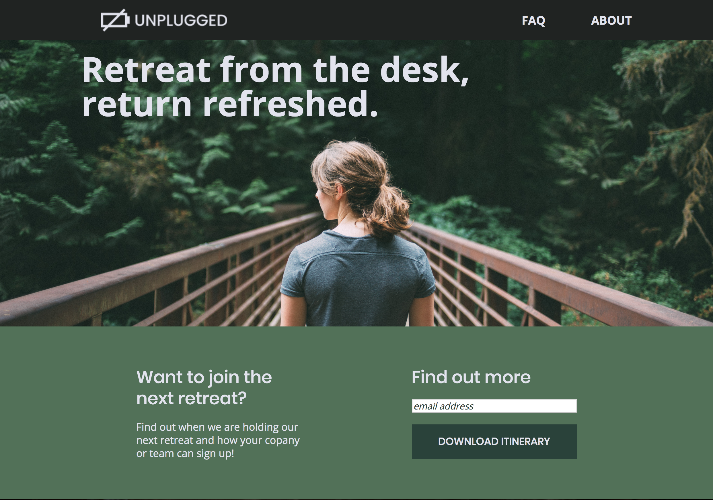
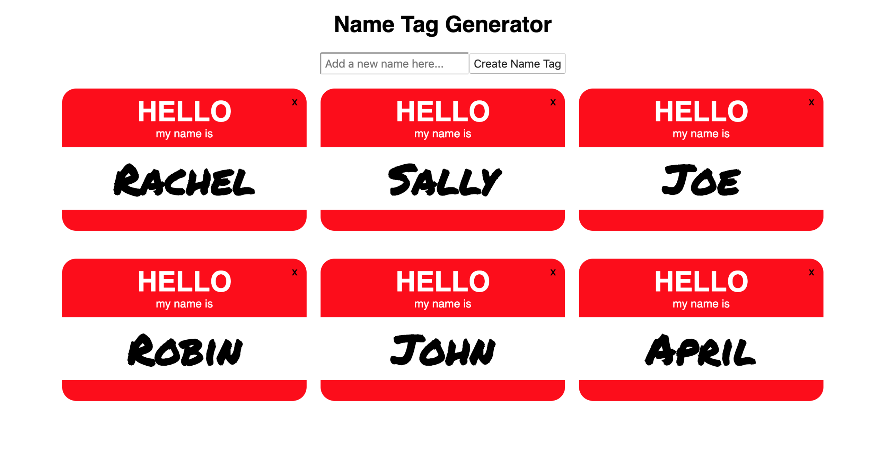
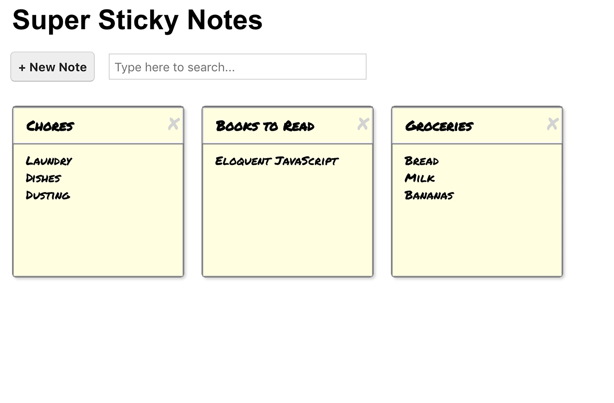
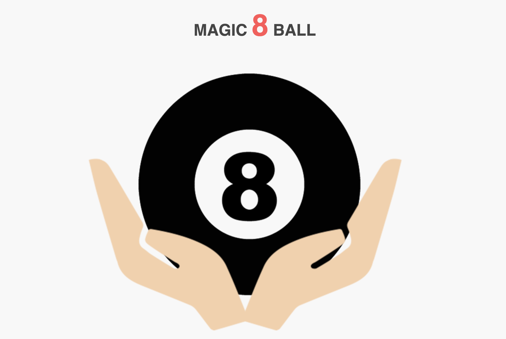
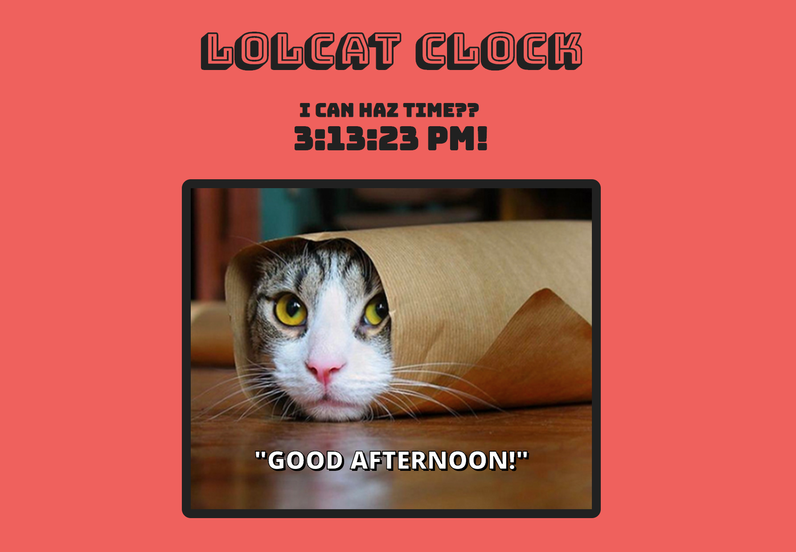

My Work
-

Unplugged Website
This project was built mobile-first as a responsive, mulit-page website using HTML and CSS including Flexbox and media queries. Re-created based on Photoshop design comps.
-

Rogue Pickings Website
This single page project was built using HTML & CSS to re-create a Photoshop design comp. It was built from a desktop view and adapted to be responsive via the use of CSS Flexbox.
-

Name Tag Generator
React app ~ Managed the data flow including setting the data model, assigning data management to the components, and rendering the UI with the use of state and props. ~ Added interactivity to allow users to add or delete name tags and set localStorage to save the data between uses.
-

Sticky Notes UI
React App ~ Built out the component tree by breaking out the functions into presentational and container components. ~ Managed the data flow including setting the data model, assigned data management to the components, and rendered the UI with the use of state and props. ~ Added interactivity to allow users to add, delete, and edit notes and set localStorage to save the data between uses.
-

Magic 8-Ball
Project to build an interactive Magic 8-Ball using JavaScript with the JQuery library.
-

LOLcat Clock
Project to build an interactive clock that displays cat images based on time of day using JavaScript.
-

-
Tribute Page
Tribute page built using HTML & CSS including Flexbox to make it responsive.